Take-off, en-route and landing performance of the Boeing 737-800 NG: speeds, limiting weights, runway condition, climb and obstacles, reduced thrust, cruise, driftdown and landing distance.
10 lessons · 3 modules · about 1.5 hours
Training material only. It does not replace the Aircraft Flight Manual, FCOM, QRH, MEL or the Domestic Airlines Operations Manual, which always take precedence.
Lesson 01: Performance Framework and Take-off Speeds
Lesson 1 of 10 · about 10 min
Learning objectives
Name the speeds demonstrated during certification.
Define the operational take-off speeds V1, VR, VLOF and V2.
Explain how weight, density, flaps, slope and wind move V1, VR and V2.
Every speed has a meaning.
Why performance is regulated
Performance rules make sure that an engine failure at the most critical moment of a flight never leaves the crew without a safe option. Certification (EASA CS-25) demonstrates what the aeroplane can do; the operating rules (Part-CAT, CAT.POL.A) say how much margin the airline must keep on every flight. For the B737-800 the results are delivered through the company performance tool, the FCOM Performance Inflight (PI) chapter and the QRH.
Demonstrated speeds
VS / VSR — stall speed. Certification uses the reference stall speed VSR, a calibrated airspeed not lower than the 1-g stall speed (CS 25.103).
VMU — minimum unstick speed: the lowest speed at which the aeroplane can safely lift off and continue the take-off, at the maximum attainable angle of attack on the ground (CS 25.107).
VMCG — minimum control speed on the ground: after a sudden failure of the critical engine, the crew keeps the lateral deviation within 30 ft of the centreline with rudder only — no nosewheel steering. Determined at maximum take-off thrust, aft CG, trimmed for take-off (CS 25.149).
VMCA — minimum control speed in the air: straight flight with not more than 5° of bank and a heading change of 20° at most during the recovery.
VTIRE — maximum certified tyre speed: 225 mph (195 kt ground speed) for the B737.
Note
Crosswind and slippery runways are not taken into account when VMCG and VMCA are determined.
Overview of the take-off speeds: demonstrated, operational, related and certified speeds in their order along the take-off. Source: Domestic Airlines B737-800 NG performance course.
Operational speeds
VEF — the speed at which the critical engine is assumed to fail; not less than VMCG.
V1 — the maximum speed at which the first action to stop must be taken, and the minimum speed from which the take-off can be continued after a failure at VEF. One second of recognition is allowed between VEF and V1. A single V1 is used for both cases (CAT.POL.A.205). V1 ≥ VMCG and V1 ≤ VR and VMBE.
VR — rotation speed, chosen so that a normal rotation (about 3° per second) gives V2 at 35 ft after an engine failure at VEF. VR ≥ V1 and VR ≥ 1.05 VMCA.
VLOF — lift-off speed (≥ 1.1 VMU all engines, ≥ 1.05 VMU one engine inoperative).
V2 — take-off safety speed at the screen height: V2 ≥ 1.13 VSR and ≥ 1.1 VMCA.
What moves the speeds
Factor
V1
VR
V2
Higher weight
Higher (limited by the ability to stop)
Higher
Higher
Lower density (hot, high)
Higher
Higher
Lower to keep TODR within TODA; pressure altitude matters more than OAT
More flap
Lower
Lower
Lower
Downslope / tailwind
Lower (stopping is harder)
No effect
No effect
Upslope / headwind
Higher allowed
No effect
No effect
Boeing practice
In windshear or gusty crosswind conditions VR (and V2) may be increased, up to the VR for the performance-limited weight and by 20 kt at most, to improve the climb capability.
Key takeaways
Certification demonstrates VSR, VMU, VMCG, VMCA and VTIRE.
Heavier → all speeds higher; downslope and tailwind lower V1.
Knowledge check
How is VMCG demonstrated?
With nosewheel steering and brakes
With rudder only, keeping within 30 ft of the centreline
On a wet runway with crosswind
With both engines at idle
Answer: B. VMCG uses aerodynamic controls only — no nosewheel steering — and the lateral deviation must stay within 30 ft.
Module 1 · Take-off Performance
Lesson 02: Maximum Take-off Weight and Field Length
Lesson 2 of 10 · about 10 min
Learning objectives
List the limits that make up the performance-limited take-off weight.
Define TORA, TODA, ASDA, stopway and clearway.
Explain the accelerate-stop and take-off distance requirements and the line-up correction.
The lowest limit decides.
The most limiting weight wins
The performance-limited take-off weight (PLTOW) is the lowest of the field length, climb, obstacle, tyre speed and brake energy limit weights, further reduced by MEL items. The maximum allowable take-off weight is the lowest of the PLTOW, the maximum certified structural take-off weight and the maximum allowable landing weight plus trip fuel.
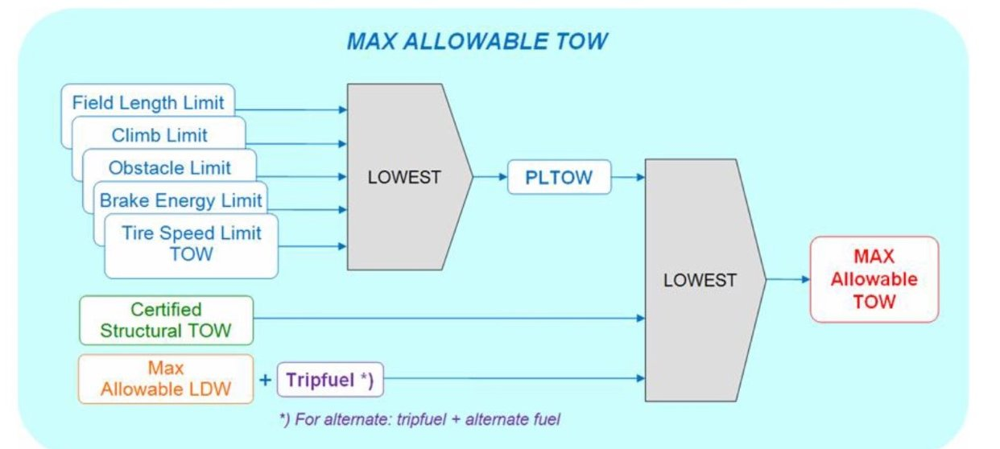
Building the maximum allowable take-off weight: the lowest of all limit weights. Source: Domestic Airlines B737-800 NG performance course.
Declared distances
TORA — runway length declared available and suitable for the ground run.
ASDA — TORA plus stopway (if declared). Stopway: at least as wide as the runway, able to support the aeroplane during a rejected take-off.
TODA — TORA plus clearway. Clearway: under airport control, at least 500 ft wide, no object above a 1.25 % plane, not longer than half the TORA.
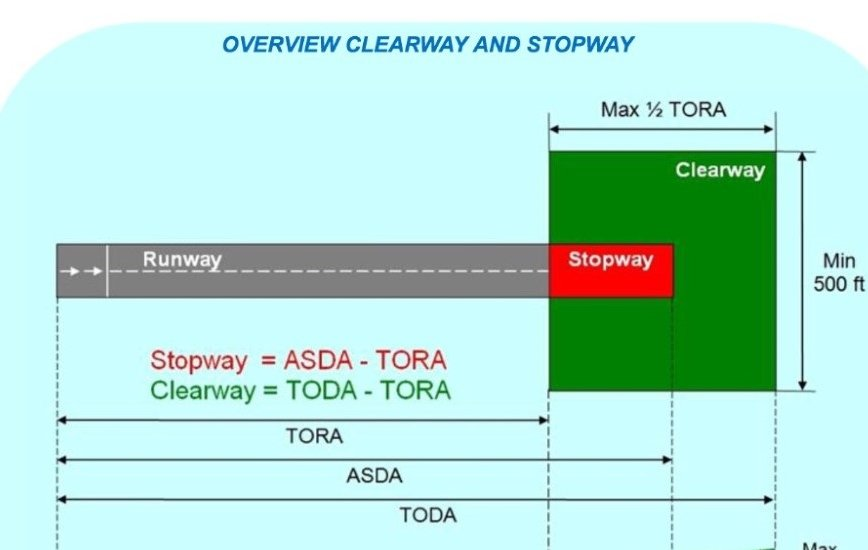
Stopway = ASDA − TORA; clearway = TODA − TORA. Source: Domestic Airlines B737-800 NG performance course.
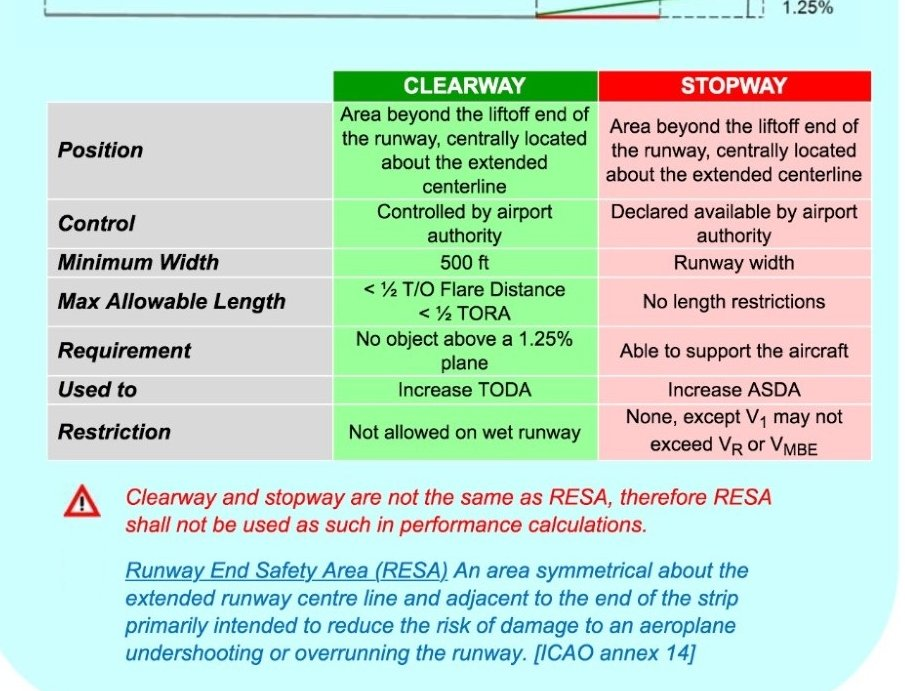
Clearway and stopway compared. The runway end safety area (RESA) is neither and is never used in performance calculations. Source: Domestic Airlines B737-800 NG performance course.
Accelerate-stop distance
The accelerate-stop distance is the distance to accelerate with all engines to V1 (including one second between VEF and V1), to keep V1 for two seconds while the stopping configuration is set, and to decelerate to a full stop. On a dry runway no credit is taken for reverse thrust; on a wet or contaminated runway one reverser may be credited. Brakes are assumed fully worn (CS 25.101).
Accelerate-stop distance for a given take-off weight: acceleration, transition and deceleration. Source: Domestic Airlines B737-800 NG performance course.
Take-off distance and run
CAT.POL.A.205 requires: accelerate-stop distance ≤ ASDA, take-off distance ≤ TODA, take-off run ≤ TORA. The take-off distance is the longer of the distance to 35 ft with an engine failure at VEF, and 115 % of the all-engine distance to 35 ft. The field length limit weight is the lower of the ASD-limited and TOD-limited weights.
Line-up correction
Lining up uses runway. Whenever the aeroplane cannot start at the threshold, the available distances are reduced (CAT.POL.A.205): ASDA by the threshold-to-nose-gear distance, TODA by the threshold-to-main-gear distance, taking the minimum edge safety distance into account.
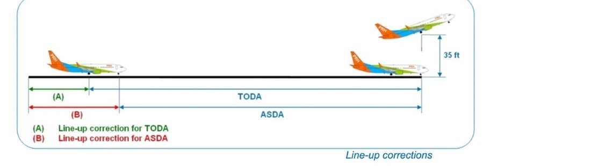
Line-up corrections: (A) for TODA, measured to the main gear; (B) for ASDA, measured to the nose gear. Source: Domestic Airlines B737-800 NG performance course.Line-up assumptions for 90° and 180° turns. Following the yellow exit line from a high-speed intersection loses more runway than the data assume. Source: Domestic Airlines B737-800 NG performance course.
Intersection take-off
Use the data computed for the actual intersection. Company take-off data normally already include the standard line-up corrections.
Key takeaways
Max allowable TOW = lowest of PLTOW, structural TOW, and max landing weight + trip fuel.
ASD ≤ ASDA, TOD ≤ TODA, TOR ≤ TORA.
No reverse thrust credit on a dry runway; brakes assumed fully worn.
Correct ASDA to the nose gear and TODA to the main gear for line-up.
Knowledge check
Which distance may include a stopway?
TORA
TODA
ASDA
LDA
Answer: C. ASDA = TORA + stopway; clearway is added to TODA.
Module 1 · Take-off Performance
Lesson 03: Balanced Take-off and Runway Surface Condition
Lesson 3 of 10 · about 10 min
Learning objectives
Explain the balanced V1 and the balanced field length.
Compare dry, wet and contaminated runway take-off rules.
Explain the V1(MCG) limit weight and why clearway is restricted on wet and contaminated runways.
Wet and contaminated runways change the rules.
Balanced V1
For a fixed runway, a heavy take-off needs a low V1 to be able to stop within the ASDA, but a high V1 to reach V2 at 35 ft within the TODA after an engine failure. The highest weight is obtained where the two requirements meet: the balanced V1 and the balanced take-off weight.
Graph 1 — take-off weight versus V1 for a fixed runway: the ASDA line (red) and the TODA line (green) cross at the balanced V1. Source: Domestic Airlines B737-800 NG performance course.
Balanced field length
For a fixed weight, a low V1 shortens the accelerate-stop distance but lengthens the take-off distance, and the reverse for a high V1. The shortest required runway is where ASDR equals TODR: the balanced field length. With a stopway or clearway the optimum V1 moves and the take-off is "unbalanced".
Graph 2 — required field length versus V1 for a fixed weight: ASDR = TODR gives the balanced field length. Source: Domestic Airlines B737-800 NG performance course.
Dry and wet runways
A damp runway (not shiny) may be treated as dry, except grass (CAT.POL.A.105); industry (TALPA) and ICAO guidance recommend treating it as wet. A wet runway has a reflective surface without significant standing water. Acceleration is unchanged but stopping is worse, so:
V1 is re-balanced to a lower value and the field length limit weight decreases;
one reverser may be credited in the accelerate-stop distance;
the screen height is reduced from 35 ft to 15 ft, therefore clearway cannot be used;
the weight may never exceed the dry-runway weight in the same conditions (CAT.POL.A.205(b)(5)) — the "dry check".
Wet runway take-off: lower V1 and weight, 15 ft screen height — the same TODR and ASDR as on a dry runway. Source: Domestic Airlines B737-800 NG performance course.
Contaminated runways
A runway is contaminated when more than 25 % of the surface in use is covered by standing water or slush deeper than 3 mm, loose snow (ICAO: deeper than 20 mm), compacted snow or ice. Fluid contaminants add displacement and spray drag and can cause aquaplaning; hard contaminants reduce friction without adding drag.
Fluid contaminant: spray and displacement drag increase with depth. Source: Domestic Airlines B737-800 NG performance course.Hard contaminant: reduced tyre-to-ground friction; depth is not relevant. Source: Domestic Airlines B737-800 NG performance course.
The rules credit reverse thrust and a 15 ft screen height, but assumed-temperature reduced thrust is not allowed. GM1 CAT.POL.A.400: such operations should be rare — the first option is to wait for the runway to be cleared.
V1(MCG) limit weight
On a slippery runway V1 may need to be reduced so much that it falls below VMCG. V1 is then set equal to VMCG, which needs more stopping distance; the weight for which the aeroplane can accelerate to VMCG and just stop within the ASDA is the V1(MCG) limit weight. A derate (not an assumed temperature) lowers VMCG and can raise this limit.
Clearway on contaminated runways
The contaminated-runway adjustments give the same distance to 15 ft as the dry weight needs to 35 ft. If the dry weight already used clearway, the height at the runway end after an engine failure could be close to zero.
With clearway credited, the runway end crossing height on a contaminated runway can fall to 0–15 ft. Source: Domestic Airlines B737-800 NG performance course.Once airborne, the lower (field-limited) weight on a contaminated runway gives a better climb gradient and more obstacle clearance. Source: Domestic Airlines B737-800 NG performance course.
Key takeaways
Balanced V1: ASD-limited and TOD-limited weights equal — the maximum field-limited weight.
Wet: lower V1, one reverser credit, 15 ft screen height, no clearway, never heavier than dry.
Contaminated: no assumed-temperature reduced thrust; check the V1(MCG) limit weight.
Waiting for the runway to be cleared is always the first option.
Knowledge check
What screen height is used at the end of the take-off distance on a wet runway?
50 ft
35 ft
15 ft
0 ft
Answer: C. The wet-runway rules reduce the screen height to 15 ft — and so clearway cannot be used.
Module 1 · Take-off Performance
Lesson 04: Take-off Climb Requirements and Improved Climb
Lesson 4 of 10 · about 9 min
Learning objectives
Describe the four take-off flight path segments and their minimum gradients.
Define the climb limit weight and the climb gradient.
Explain improved climb, its advantages and its restrictions.
One engine out, the gradient must still be there.
The take-off flight path
The take-off path runs from brake release to 1,500 ft above the runway (or the end of the transition to the en-route configuration, if higher). The take-off flight path starts at 35 ft at the end of the take-off distance and is computed with the critical engine inoperative from VEF, in still air, without ground effect (CS 25.111, 25.115). Boeing uses the minimum clean manoeuvring speed (VREF40 + 70 kt) as the final take-off speed.
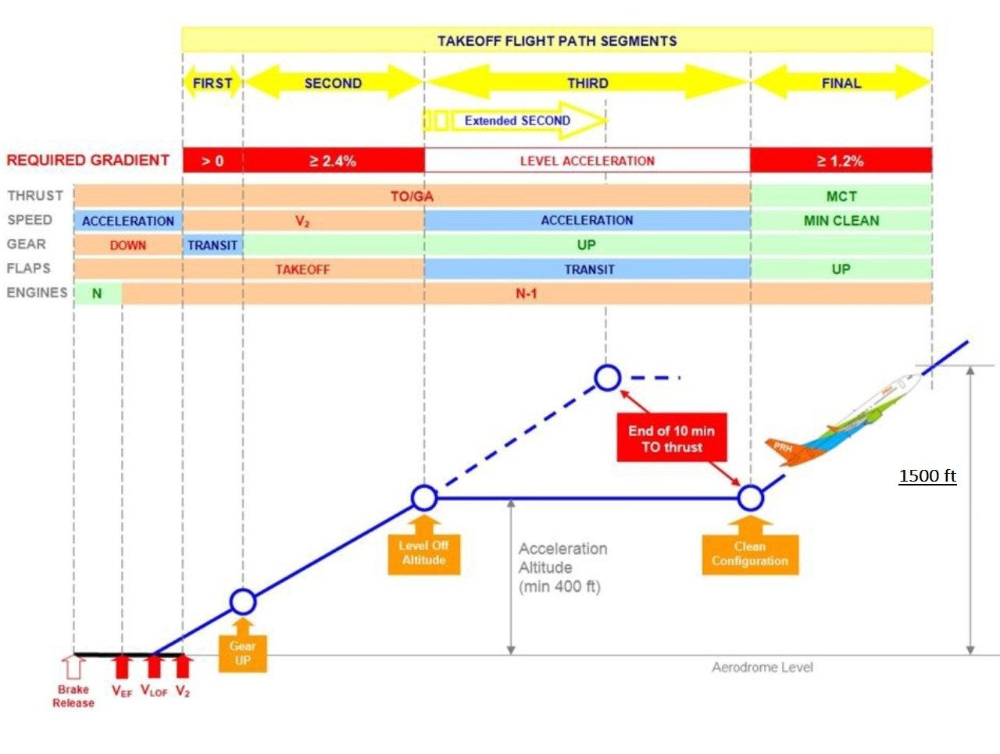
0), second segment at V2 (≥ 2.4 %), level acceleration (third segment) and final segment (≥ 1.2 %) at maximum continuous thrust." loading="lazy">The four take-off flight path segments for a twin: gear retraction (gradient > 0), second segment at V2 (≥ 2.4 %), level acceleration (third segment) and final segment (≥ 1.2 %) at maximum continuous thrust. Source: Domestic Airlines B737-800 NG performance course.
Level acceleration (min 400 ft) and flap retraction
—
Final
Clean, maximum continuous thrust, final take-off speed
1.2 %
The take-off thrust time limit (10 minutes with an engine out) ends the third segment. If any gradient cannot be achieved, the weight is reduced to the climb limit weight. More flap means more drag and a lower climb limit weight.
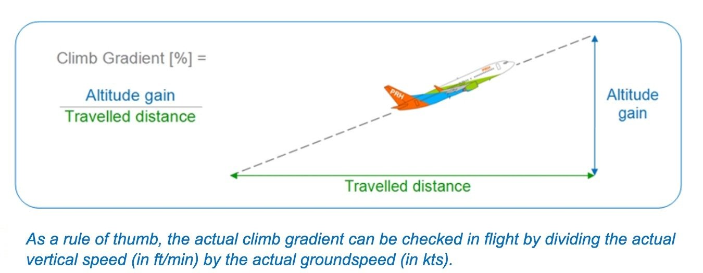
Climb gradient = altitude gain / horizontal distance. Rule of thumb: vertical speed (ft/min) divided by ground speed (kt) gives the gradient in percent. Source: Domestic Airlines B737-800 NG performance course.
Improved climb
When the runway is longer than the field limit requires, the excess runway can be traded for higher V1, VR and V2. The aeroplane then climbs at a speed closer to its best climb speed, so the climb limit weight (and often the obstacle limit weight) increases. Speeds can be raised until the field length or tyre speed limit becomes limiting, and V1 must stay below VMBE.
Improved climb: a higher V2 gives either the same gradient at a higher weight (B) or a higher gradient at the same weight (C). Source: Domestic Airlines B737-800 NG performance course.The maximum improved-climb weight lies where the rising climb limit meets the falling field and tyre speed limit. Source: Domestic Airlines B737-800 NG performance course.
Benefits and restrictions
Benefits: higher weight or higher assumed temperature when climb- or obstacle-limited; more tail clearance; distant obstacles become less limiting; the end of the third segment is reached higher.
Restrictions: smaller rejected take-off margin; close-in obstacles can become more limiting; more tyre wear; closer to VTIRE and VMBE — a slow rotation can exceed the tyre speed. Not with anti-skid inoperative. Speeds come from the performance tool or FPPM, not from the FMC.
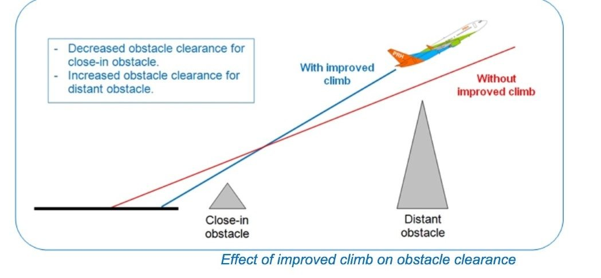
Improved climb increases the clearance over distant obstacles but reduces it over close-in obstacles. Source: Domestic Airlines B737-800 NG performance course.
The climb limit weight is computed one engine out, in still air.
Improved climb trades excess runway for higher speeds and a better gradient.
Improved climb increases tyre speed and brake energy exposure.
Knowledge check
What is the minimum second-segment gross climb gradient for a twin-engine aeroplane?
1.2 %
1.7 %
2.4 %
3.2 %
Answer: C. CS 25.121(b): 2.4 % for two-engine aeroplanes, gear up, take-off flaps, V2.
Module 1 · Take-off Performance
Lesson 05: Obstacles, Tyre Speed, Brake Energy and Flap Selection
Lesson 5 of 10 · about 10 min
Learning objectives
Apply the net take-off flight path and obstacle clearance rules.
Explain the engine failure procedure (SID deviation and restriction points).
Explain the tyre speed and brake energy limits and how the take-off flap setting changes each limit.
The net path must clear every obstacle.
Obstacle accountability area
Every obstacle inside the obstacle accountability area (departure sector) must be cleared with one engine inoperative until the aeroplane reaches 1,500 ft net height. CAT.POL.A.210 sets the lateral limits: a semi-width of 90 m + 0.125 D (60 m + half the wingspan for small wingspans), up to 300 m with sufficient navigation accuracy or 600 m otherwise for track changes up to 15°, and wider (600 m / 900 m) for larger track changes.
Obstacle accountability area for track changes up to 15°. Source: Domestic Airlines B737-800 NG performance course.
Net flight path
The gross flight path is what an average aeroplane achieves with one engine out. The net flight path is the gross gradient reduced by 0.8 % for a twin, to cover pilot technique and fleet variation. The net path must clear every obstacle by at least 35 ft, or 50 ft when the bank angle exceeds 15°. The most penalising obstacle gives the obstacle limit weight.
Vertical obstacle clearance: the net take-off flight path clears obstacles by at least 35 ft. Source: Domestic Airlines B737-800 NG performance course.Wet or contaminated runway: the gross path starts at 15 ft, so a close-in obstacle may be cleared by between 15 and 35 ft (AMC1 CAT.POL.A.210). Source: Domestic Airlines B737-800 NG performance course.
Engine failure procedures
Where obstacles would make the straight-out limit too restrictive, the company publishes an engine failure procedure (emergency turn). PANS-OPS makes this the operator's responsibility. Two points may be defined on a SID: the SID deviation point, where the engine-out route leaves the SID, and the SID restriction point, after which the SID itself can be followed safely with one engine inoperative.
Remember
A SID climb gradient (standard 3.3 %) is an all-engines gradient: meeting it does not prove one-engine-inoperative obstacle clearance.
Excess thrust with both engines is about four times the one-engine excess thrust: the height gained before a failure matters. Source: Domestic Airlines B737-800 NG performance course.
Tyre speed and brake energy
The tyre speed limit weight is the weight whose lift-off ground speed equals the certified tyre speed (B737: 225 mph / 195 kt). It can limit at hot and high airports or with improved climb. More flap or less weight lowers VLOF. Rotate at the normal rate — a slow rotation raises the actual lift-off speed.
VMBE is the highest V1 from which the brakes can absorb the energy of a stop. It is demonstrated with 90 % worn brakes, no reverse thrust and residual heat equal to 3 taxi miles and 3 stops; a safe evacuation must remain possible for 5 minutes after the stop. If V1 exceeds VMBE, reduce the weight or unbalance V1.
Choosing the take-off flap
More flap creates more lift and more drag: shorter take-off distance and higher field limit weight, more tail clearance — but a lower climb limit and obstacle limit weight. Field-limited: choose more flap. Climb- or obstacle-limited: choose less flap. The performance tool normally optimises the flap setting.
Key takeaways
Net path = gross − 0.8 % (twin); clearance ≥ 35 ft, ≥ 50 ft if bank > 15°.
Meeting a SID gradient does not guarantee engine-out obstacle clearance.
Tyre speed limits VLOF; VMBE limits V1.
Field-limited → more flap; climb- or obstacle-limited → less flap.
Knowledge check
The take-off is obstacle-limited. Which flap change usually helps?
More flap
Less flap
Flap has no effect
Flaps up
Answer: B. Less flap reduces drag and improves the climb gradient — provided the field length allows it.
Module 1 · Take-off Performance
Lesson 06: Reduced and Derated Take-off Thrust
Lesson 6 of 10 · about 10 min
Learning objectives
Explain flat rating and EGT margin on the CFM56-7B.
Compare derated thrust and the assumed temperature method.
List the restrictions on reduced thrust and its effect on the take-off speeds.
Reduce thrust whenever you can.
Flat-rated engine
The CFM56-7B gives constant take-off thrust up to the flat-rating temperature (FRT, corner point; about ISA + 15 °C). Below it the engine is pressure-limited and N1 and EGT rise with OAT; above it the engine is temperature-limited: EGT stays at the limit and thrust falls.
CFM56 flat rating: constant TO/GA thrust up to the flat-rated temperature; above it thrust decreases while EGT is held. EGT margin = red line − EGT at full thrust above the FRT. Source: Domestic Airlines B737-800 NG performance course.
EGT margin and engine life
Engine deterioration lowers the EGT margin; when the OAT limit falls below the FRT, a full-thrust take-off can exceed the red line. Engines cause about two thirds of aircraft performance deterioration. CFM figures: a 10 °C loss of EGT margin is about 3,000 cycles and costs about 0.7 % fuel; 1 % N1 ≈ 10 °C EGT; 1 °C of assumed temperature ≈ 3.5 °C EGT. Pilot tools: reduce take-off thrust whenever possible, and allow at least 3 minutes of cooling at or near idle after landing (taxi included).
Derated thrust (fixed)
A derate is a lower certified rating with its own AFM data — as if the aircraft had smaller engines. The derated value is a limit: VMCG and VMCA are computed at the derated thrust, so they are lower. Advantages: higher V1(MCG) limit weight, allowed on contaminated runways and with anti-skid inoperative, better trimmed, may improve loadability. Danger: advancing the levers beyond the derate after an engine failure at low speed can cause loss of directional control.
Assumed temperature method (ATM)
The crew enters a temperature higher than the OAT; the engine produces the thrust for that temperature. The thrust setting is not a limit: full thrust for the actual OAT may be selected at any time (AMC 25-13), because VMCG and VMCA are based on full thrust at the actual OAT. The maximum reduction is 25 % of the rated thrust; the assumed temperature cannot be below the FRT; and it is limited by the actual weight reaching the performance-limited weight.
Assumed temperature: reduced thrust between the actual OAT and the maximum assumed temperature; at most 25 % below the available thrust. Source: Domestic Airlines B737-800 NG performance course.
Built-in margins of ATM
At the actual (lower) temperature the air is denser: the true airspeed is lower for the same IAS and the thrust is higher than computed. The aeroplane therefore uses less runway and climbs better than assumed. These margins exist only when the assumed temperature is above the FRT and above the OAT, they do not exist with a derate, and they must never be used for weight planning.
ATM is conservative: the actual performance is always better than the assumed performance. Source: Domestic Airlines B737-800 NG performance course.
Restrictions and effects
No ATM on contaminated runways; on wet runways only with suitable data; not when items increase workload (inoperative engine instruments, reversers or anti-skid, engine intermix, non-standard procedures) — AMC 25-13.
Double derate: ATM applied to a derate, at most 25 % below the derated thrust.
Reduced thrust needs a higher V1 (re-balancing) and a lower V2; the trim is set for full thrust, so expect a nose-up trim after take-off.
The application of reduced thrust is always at the commander's discretion; company restrictions apply.
Optimised take-off
The performance tool combines flap settings and improved climb to find the highest assumed temperature — this does not reduce the margins: a higher assumed temperature gives more TAS and thrust margin.
Key takeaways
CFM56 flat rated to about ISA + 15 °C; reduce thrust whenever possible to protect EGT margin.
Derate = a new limit (lower VMC); ATM = not a limit, full thrust always available.
ATM: maximum 25 % reduction, not below the FRT, never on contaminated runways.
ATM margins come from lower TAS and higher actual thrust — never plan with them.
Knowledge check
With the assumed temperature method, may the crew advance the thrust levers to full thrust after an engine failure?
No — the reduced thrust is a limit
Yes — reduced thrust is not a limit
Only above V2
Only with a derate
Answer: B. AMC 25-13: with reduced (ATM) thrust, full take-off thrust may be selected at any time; VMCG/VMCA were computed with full thrust.
Module 2 · En-route Performance
Lesson 07: En-route Climb and Cruise
Lesson 7 of 10 · about 9 min
Learning objectives
Explain the cost index and its effect on speeds.
Describe the climb profile and the crossover altitude.
Choose a cruise altitude and speed: optimum and maximum altitude, step climb, MRC, LRC and ECON.
Cost index decides the speed.
Cost index
Cost index (CI) = time-related costs / fuel costs. A low CI flies slower and burns less fuel; a high CI flies faster to save time-related costs. CI 0 gives the maximum range cruise speed.
Climb
The economy climb speed increases with weight and cost index. Climbing at constant IAS, the TAS increases; at constant Mach, it decreases. The change from IAS to Mach happens at the crossover altitude (around FL290 for 300 kt / M0.78).
IAS and Mach versus altitude: climb profile 250 kt – 300 kt – M0.78, crossover altitude and tropopause. Source: Domestic Airlines B737-800 NG performance course.
Optimum and maximum altitude
The optimum altitude gives the best fuel mileage (or, at ECON speed, the lowest cost). It rises as weight decreases. Stay within about ±2,000 ft (±1,000 ft in RVSM airspace): 2,000 ft below optimum costs about 1 % fuel, 2,000 ft above about 2 %.
The maximum altitude is the lowest of the certified ceiling, the thrust-limited altitude (residual climb 100 ft/min in cruise, 300 ft/min in climb) and the manoeuvre-margin altitude (buffet margin 1.3 g ≈ 40° bank; optimum altitude gives about 1.5 g).
Step climbs keep the aeroplane close to the optimum altitude as fuel burns. Source: Domestic Airlines B737-800 NG performance course.737NG CG travel with fuel burn. Enter a realistic cruise CG in the FMC: the default forward CG gives a conservative maximum altitude. Source: Domestic Airlines B737-800 NG performance course.
Near the maximum altitude
Only LNAV protects the bank angle against the thrust limit. Otherwise fly at least 10 kt above the lower amber band and keep the bank below 10°. The FMC maximum altitude does not account for stick-shaker speeds.
Cruise speed
MRC — maximum range cruise: the best fuel mileage for the weight (CI 0); poor speed stability.
LRC — long range cruise: about 1 % less mileage but 3–5 % faster, with better speed stability.
ECON — speed for the minimum total cost, from MRC at CI 0 up to the cruise thrust limit. Tailwind lowers it, headwind raises it. Typical airline CI values give a speed between MRC and LRC.
Fuel mileage versus cruise speed: MRC and LRC decrease as the weight decreases. Source: Domestic Airlines B737-800 NG performance course.ECON speed: the minimum of fuel plus time-related costs. Source: Domestic Airlines B737-800 NG performance course.
Key takeaways
CI = time costs / fuel costs; CI 0 = MRC.
Optimum altitude rises as weight decreases; step climb to stay within ±2,000 ft (RVSM ±1,000 ft).
Maximum altitude: certified, thrust-limited or buffet-limited (1.3 g), whichever is lowest.
LRC ≈ 1 % less mileage than MRC but 3–5 % faster.
Knowledge check
What does a cost index of zero give?
Maximum speed
Maximum range cruise (minimum fuel)
Long range cruise
Holding speed
Answer: B. With no time-related cost, the FMC minimises fuel: MRC.
Module 2 · En-route Performance
Lesson 08: Driftdown and En-route Obstacle Clearance
Lesson 8 of 10 · about 8 min
Learning objectives
Describe the driftdown procedure and the driftdown ceiling.
Apply the net driftdown flight path clearance rules (CAT.POL.A.215).
Explain the lateral corridor and the route study.
Driftdown: stay as high as possible.
Why the aeroplane drifts down
After an engine failure in cruise the thrust required exceeds the maximum continuous thrust of the remaining engine. The aeroplane must descend to a lower altitude where denser air gives enough thrust to balance the drag.
The driftdown procedure
Set maximum continuous thrust on the remaining engine.
Decelerate to the optimum driftdown speed (best lift-to-drag ratio) while maintaining altitude.
Descend at this speed to the driftdown ceiling (level-off altitude).
A higher speed gives a steeper descent and a lower level-off altitude. After the driftdown, LRC gives the best range.
A higher driftdown speed gives a lower level-off altitude. Source: Domestic Airlines B737-800 NG performance course.
Vertical clearance
The net driftdown flight path (gross gradient reduced by 1.1 % for a twin) must clear all obstacles by 2,000 ft during the descent and by 1,000 ft after level-off, within 5 NM either side of the track, and allow level flight at 1,500 ft above the aerodrome of intended landing (CAT.POL.A.215). Anti-ice drag and the most unfavourable CG are included when applicable.
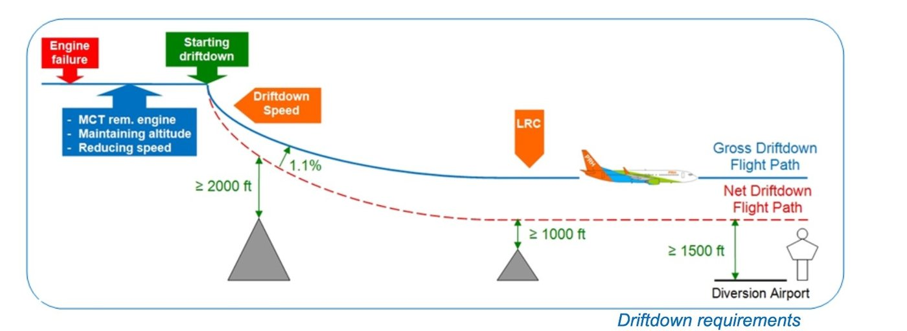
Driftdown requirements: gross and net driftdown paths, 2,000 ft and 1,000 ft obstacle clearances, 1,500 ft over the diversion airport. Source: Domestic Airlines B737-800 NG performance course.
Lateral clearance and route study
EASA requires 5 NM either side of the intended track (more than the ICAO 5 statute miles), increased to 10 NM when the navigation accuracy is not met. For mountainous routes, a route study defines escape procedures and decision points from the most critical point of failure. If the requirements cannot be met, the weight is restricted or another route is chosen.
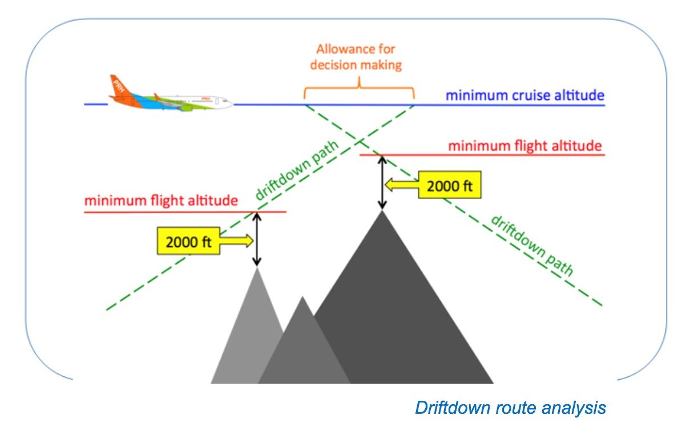
Driftdown route analysis: escape paths and decision points over high terrain. Source: Domestic Airlines B737-800 NG performance course.
Key takeaways
Driftdown: MCT, decelerate to the best L/D speed, descend to the driftdown ceiling.
Net path = gross − 1.1 % (twin); 2,000 ft clearance in descent, 1,000 ft after level-off.
Corridor 5 NM each side (10 NM without the navigation accuracy).
Mountain routes need a route study with escape procedures.
Knowledge check
During driftdown, by how much must the net flight path clear the terrain?
500 ft
1,000 ft
2,000 ft
35 ft
Answer: C. CAT.POL.A.215: 2,000 ft during the descent, 1,000 ft for level flight.
Module 3 · Landing Performance
Lesson 09: Landing Speeds and Dispatch Landing Requirements
Lesson 9 of 10 · about 10 min
Learning objectives
Define LDA and explain the displaced threshold.
Define VREF and the final approach speed (FAS).
Apply the dispatch landing field length rules for dry, wet and contaminated runways.
60 % of the LDA for dispatch.
Landing distance available
The LDA is the runway length declared suitable for the landing ground run. Stopway cannot be used. An obstacle in the approach funnel creates a displaced threshold: the LDA starts at the displaced threshold, while the paved area before it remains usable for taxi, take-off and the landing roll-out of the opposite direction.
Displaced threshold due to an obstacle in the approach path. Source: Domestic Airlines B737-800 NG performance course.
Landing speeds
VREF is at least 1.23 VSR0 in the landing configuration and not less than VMCL. The final approach speed (FAS) is VREF plus a correction: half the steady headwind component plus the full gust increment, at least 5 kt and at most 20 kt, and at least 5 kt below the flap placard speed. The gust increment is kept to touchdown; touchdown is normally between VREF and VREF − 5 kt.
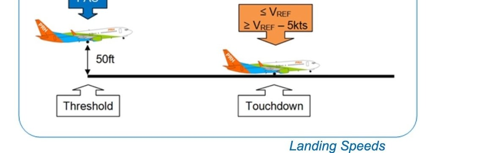
Landing speeds: FAS down to 50 ft at the threshold, touchdown between VREF and VREF − 5 kt. Source: Domestic Airlines B737-800 NG performance course.
Maximum allowable landing weight
For dispatch, the landing weight at destination and alternates is the lowest of the landing field limit weight, the landing climb limit weight (approach and landing climb gradients), the maximum structural landing weight and, where relevant, the quick-turnaround brake cooling limit. Not more than 50 % of the headwind and not less than 150 % of the tailwind are used, and slopes beyond ±2 % are accounted for (the B737NG is limited to ±2 %).
Certified landing distance
The flight-test landing distance (from 50 ft, aggressive technique, maximum manual braking, no reverse) is multiplied by 1.67 for a dry runway — the aeroplane must stop within 60 % of the LDA (CAT.POL.A.230). On a wet runway the requirement is 115 % of the dry distance (CAT.POL.A.235): 52 % of the LDA. On a contaminated runway it is the longer of the wet distance and 115 % of the approved contaminated landing distance.
Planning margins on the LDA: 40 % dry and 48 % wet. Source: Domestic Airlines B737-800 NG performance course.
Which runway?
The dispatch check is made for the most favourable runway in still air and for the runway most likely to be assigned with the expected wind (GM1 CAT.POL.A.230). If the weight only meets the first case, dispatch is possible with two suitable alternates; if it only fails the second, one suitable alternate is required — and in flight the actual landing weight must meet the limit for the actual wind.
Key takeaways
VREF ≥ 1.23 VSR0; FAS = VREF + ½ steady headwind + full gust (5–20 kt).
Dispatch dry: stop within 60 % of LDA (factor 1.67).
Wet: 115 % of the dry distance (52 % of LDA).
Check both the longest runway in still air and the expected runway with the expected wind.
Knowledge check
For dispatch to a dry runway, a jet must be able to stop within what part of the LDA?
50 %
60 %
70 %
85 %
Answer: B. CAT.POL.A.230: turbojet aeroplanes — 60 % of the LDA.
Module 3 · Landing Performance
Lesson 10: In-flight Landing Distance and Runway Condition Reports
Lesson 10 of 10 · about 9 min
Learning objectives
Explain the in-flight landing performance assessment at the time of arrival.
Use runway condition reports (GRF / RCAM) in the assessment.
Recall the go-around climb gradients and the autoland correction.
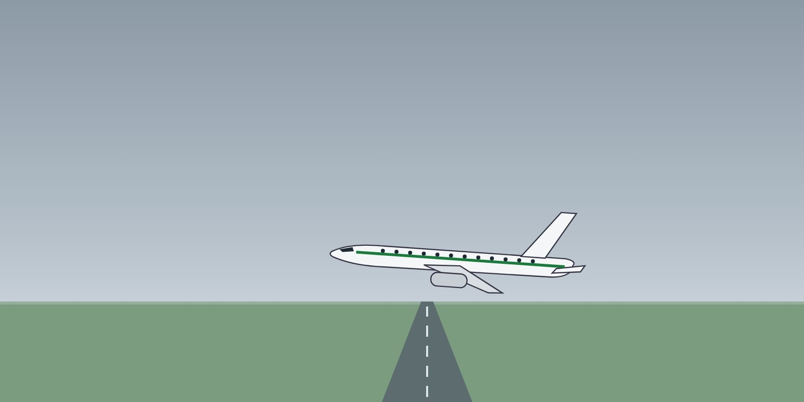
Assess the landing distance before every approach.
Dispatch is not the end
The dispatch rules use planning assumptions. Before starting an approach, the commander must be satisfied that the weather, the runway condition and the aeroplane's performance allow a safe approach, landing or missed approach (CAT.OP.MPA.300). The assessment uses the actual landing weight and the actual conditions:
the landing distance required must not exceed the LDA;
the go-around gradient must be achievable.
Factored in-flight landing distance
The in-flight landing distance from the QRH / performance tool is an operational distance for the actual braking action, speed additives, reverser use and autobrake. A margin of 15 % is applied when the runway is not dry — company data normally include it. QRH Normal Configuration Landing Distance tables for slippery runways are already factored by 15 %. Landing distance data are based on fully worn brakes (CS 25.101).
Runway condition reports
Under the Global Reporting Format (ICAO Annex 14 / PANS-Aerodromes, applicable since November 2021), the aerodrome reports a runway condition code (RWYCC 6 to 0) for each third of the runway, with the contaminant type, depth and coverage. The code links directly to a braking action and to the performance data:
RWYCC
Typical description
Braking action
6
Dry
—
5
Wet (up to 3 mm), frost
Good
4
Compacted snow (OAT −15 °C or colder)
Good to medium
3
Slush, dry/wet snow over 3 mm, wet "slippery wet" runway
Medium
2
Standing water or slush over 3 mm
Medium to poor
1
Ice
Poor
0
Wet ice, water on compacted snow
Less than poor — no operations
Pilot reports of braking action
The reported code is an assessment made at a given time. Conditions change quickly with precipitation, temperature and traffic.
Pilot reports
An air-report of braking action worse than the reported code is an important threat: downgrade the assessment and share the report. See the Cold Weather Operations course (GRF module) for full detail.
Go-around and autoland
Approach climb (one engine inoperative, approach flaps, gear up): at least 2.1 % for a twin (CS 25.121(d)).
Landing climb (all engines, landing configuration, gear down): at least 3.2 % (CS 25.119).
Autoland may need a longer landing distance (CS-AWO): reduce the LDA by the published autoland increment (AMC7 CAT.POL.A.320).
If the dispatch relied on the actual wind at a single-runway destination, check that the actual landing weight does not exceed the limit for the actual wind.
Good practice
Brief the landing distance assessment with the approach briefing: runway, RWYCC, wind, autobrake, flap, reverser plan, and the go-around gradient if the missed approach is demanding.
Key takeaways
Before every approach: actual landing distance ≤ LDA and go-around gradient achievable (CAT.OP.MPA.300).
Apply 15 % to the in-flight landing distance when the runway is not dry.
RWYCC 6–0 links runway condition to braking action and data; RWYCC 0 = no operations.
The runway condition code reported is 0. What does it mean?
Dry runway
Good braking
Less than poor braking — no operations
Medium braking
Answer: C. RWYCC 0 (wet ice, water on compacted snow): braking less than poor — operations are not permitted.
Training material only. It does not replace the Aircraft Flight Manual, FCOM, QRH, MEL or the Domestic Airlines Operations Manual, which always take precedence.